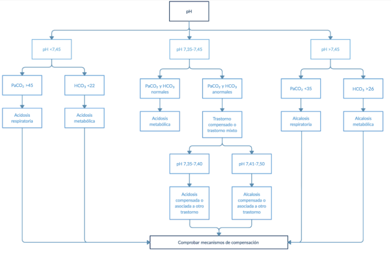

1 Definicion
La gasometría es un análisis de sangre que consiste en una punción en la arteria radial de la muñeca que se realiza con anestesia local.
Permite medir la cantidad de oxígeno, dióxido de carbono y el pH en la sangre. Ayuda a diagnosticar, establecer la gravedad y hacer un seguimiento de las enfermedades que afectan el intercambio de gases
2¿Qué parámetros se miden?
Los parámetros que se miden en una gasometría arterial son los siguientes : presión parcial arterial de dióxido de carbono (PaCO2), presión parcial arterial de oxígeno (PaO2) y pH. También se pueden obtener unos valores derivados que son importantes para la clínica: concentración de bicarbonato real y estándar (HCO3-), diferencia alveoloarterial de oxígeno y la presión parcial de oxígeno necesaria para que la hemoglobina en sangre esté saturada al 50% (P50).
| Presión parcial de oxígeno (PaO2). Esto mide la presión del oxígeno disuelto en la sangre y qué tan bien el oxígeno puede desplazarse desde los pulmones hacia la sangre. | Presión parcial de dióxido de carbono (PaCO2). Esto mide la presión del dióxido de carbono disuelto en la sangre y lo bien que el dióxido de carbono puede eliminarse del cuerpo. | pH. El pH mide los iones de hidrógeno (H+) en la sangre. Por lo general, el pH de la sangre es de entre 7.35 y 7.45. El pH inferior a 7.0 se llama ácido y el pH superior a 7.0, básico (alcalino). Por tanto, la sangre es ligeramente básica. | Bicarbonato (HCO3) . El bicarbonato es una sustancia química (protectora) que impide al pH de la sangre hacerse demasiado ácido o demasiado básico. | Valores del contenido de oxígeno (O2CT) y la saturación de oxígeno (O2Sat). El contenido de O2 mide la cantidad de oxígeno en la sangre. La saturación de oxígeno mide la cantidad de hemoglobina en los glóbulos rojos que transporta oxígeno (O2). |
3Interpretación de parámetros
Valores normales
Los valores normales enumerados aquí, llamados límites de referencia, son solo una guía. Estos límites varían de un laboratorio a otro y dependen de la elevación sobre el nivel del mar.
Pasos

Paso 1. Determinar el pH Los valores normales del pH oscilan entre 7.35 y 7.45. Si el pH disminuye (< 7.35) implica acidemia, mientras que si aumenta (> 7.45) implica alcalemia si está alterado, ver la dirección de la alteración (acidosis o alcalosis); o si el pH es normal, ir al paso 2.
Paso 2. Determinar la PaCO2; Los niveles normales de PaCO2 oscilan entre 35 mmHg y 45 mmHg (nivel del mar). Por debajo de 35 mmHg es alcalosis y por encima de 45 mmHg es acidosis si está alterada, ver la dirección de la alteración (acidosis respiratoria o alcalosis respiratoria); o si la PaCO2 es normal, ir al paso 3.
Paso 3. Determinar Exceso de base (EB); Los niveles normales de la base oscilan en -2 a + 2 mEq/L; por debajo de -2 mEq/L es acidosis y superior a + 2 mEq/L es alcalosis si está alterada, ver la dirección de la alteración (acidosis metabólica o alcalosis metabólica). También es de utilidad para determinar si un trastorno respiratorio es agudo o crónico (EB normal = trastorno respiratorio agudo; EB anormal = trastorno respiratorio crónico). Si los tres pasos son normales, se considera una gasometría normal.
Lo siguiente a realizar es valorar el grado de compensación para cada trastorno: lo respiratorio es compensado con lo metabólico y lo metabólico con lo respiratorio. de esta manera podemos determinar si el trastorno está compensado o es mixto.
Acidosis metabólica: una vez detectado un trastorno de acidosis metabólica, el siguiente paso es determinar la compensación respiratoria producto de la PaCO2 esperada para ese trastorno.
Alcalosis metabólica: La forma en la que el organismo responde a esta alteración es con la hipoventilación para mantener una adecuada relación entre el HCO3 - y la PaCO2
Trastornos respiratorios: Estos se dividen en agudos y crónicos dependiendo del grado de compensación metabólica, durante los cambios agudos respiratorios, el EB no se ve alterado, Por lo anterior, una manera efectiva de diferenciar los trastornos respiratorios agudos de los crónicos es verificar el EB; si este se encuentra dentro de rangos normales, se trata de un trastorno agudo y no se buscará la compensación; sin embargo, si el EB se encuentra alterado, se tratará de un trastorno respiratorio crónico y lo siguiente será determinar la compensación por medio del EB esperado